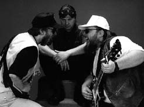
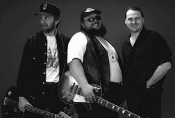

ВОЛЬНЫМ СТИЛЕМИнтервью провел Олег "Мистер
Твистер" Усманов.
|
 В "Музооне" появились первые блюзмены: Борис Булкин (гитара и голос) и Юрий Корепанов (бас) из ВОЛЬНОГО СТИЛЯ. Их нынешний ударник Александр Косорунин болен и мы желаем ему поправиться.Избрав эту ветвь традиционной музыки, ВОЛЬНЫЙ СТИЛЬ никогда не отказывался поиграть на днях рождения рок-н-ролла, представляя блюзового родителя этой заводной музыки. Не всегда у СТИЛЯ все шло гладко. Тем не менее с завидным упорством и хладнокровием СТИЛЬ переживал чередующиеся взлеты и падения. На заре становления коллектива Боря мастерил какие-то "примочки", делал разрезные порожки для гитар. В начале 90-х последовали головокружительный взлет (победа на конкурсе "Живой звук") и сокрушительный удар: взращенный ВОЛЬНЫМ СТИЛЕМ барабанщик уходит в КРОССРОУДЗ, тогда второй по величию блюзовый состав страны. Однако изредка ? и неожиданно ? раздавался звонок Бориса: "Старик, я такую сейчас музычку для себя раскопал!" И прямо по телефону он крутил понравившуюся вещь, например Клэренса Гейтмаута Брауна или другого блюзмена, битника или рокабилла. Мы садимся в самый тихий уголок клуба и говорим о музыке, перетрясках составов, о музыкальном менеджменте, о клубной жизни и московской блюзовой сцене. Они сдержаны как и подобает мужикам-бородачам, но порой из них хлещет безудержное веселье, когда накатывают воспоминания о каком-то забавном эпизоде. Надеюсь, вам есть что рассказать. Есть артисты, которым вообще сказать нечего, а они чего-то говорят. А кто-то и сказать не может. Борис Булкин: Настоящий художник, я где-то слышал, мало говорит. А по другой версии, он не умеет говорить. Пресли был косноязычным? ББ: Да, но как он концерт вел! Юрий Корепанов: Заученные фразы! Это ему полковник Паркер спичи писал! ББ: На самом деле это была бегущая строка в телевизоре на авансцене! (смеется) Я недавно слушал оперу "Хованщина" по ящику. Все замечательно, но там отчетливо были слышны слова суфлера: "Надо поспешить" ? баритон: "Надо поспеша-а-а-ать". Смешно, как в анекдоте - суфлер: "Медленно встает" - баритон: "Медленно встаё-о-о-о-от". (все смеются) Такой облом, а там ведь Светланов дирижирует. Так бы мы и хохмили, если бы Юрий наметанным администраторским глазом не оценил оставшееся нам время: "Давайте разговоры разговаривать". Мы неохотно подчиняемся. Почему ВОЛЬНЫЙ СТИЛЬ - это одно, а СТЭЙНЛЕС БЛЮЗ БЭНД - другое. Вы и сейчас существуете параллельно. ББ: Это не то чтобы так. Все
началось-то с ЛИГИ БЛЮЗА. Почему ЛИГА
БЛЮЗА- Потому что... тире ВОЛЬНЫЙ СТИЛЬ.
Это альтернатива ЛИГЕ. Я ушел оттуда... ББ: В 1986 году, с началом перестройки. Не повезло мне, поотстал я тогда. Все вперед пошли зарабатывать себе политические, музыкальные, артистические дивиденды. А я с ребятами в заводской команде чесал. Репетиция начиналась с покупки портвейна в ближайшем магазине. Отчего репетиции проходили весело, но не очень продуктивно. Через год мы с Юрой повстречались - тогда был переломный момент. Басист Коля Молчанов сделал два больших дела: познакомил меня с Юрой и нашел базу. ЮК: Вряд ли СТЭЙНЛЕС БЛЮЗ БЭНД и ВОЛЬНЫЙ СТИЛЬ можно назвать альтернативными формированиями или антиподами. Боря играет в обеих командах, дополняя себя. Там он играет приятный томный блюз, а в СТИЛЕ - жесткий блюзрок. ББ: Я бы еще третий состав сделал. Типа... ББ: Типа... ЮК: Он хочет сказать, что я ему не разрешаю! (все ржут) ББ: Мы пытались делать что-то в фанке, даже пару концертов дали с клавишами, но дальше не сложилось. Боря, ты когда гитару в руки взял? ББ: Первый выход на сцену - 74-й год, 9-й класс, затем выпускной вечер. Потом Московский авиационный институт, потом смутные времена, группа WEEKEND на уровне жэковской самодеятельности.Величайшая веха в моей музыкальной карьере (хитро улыбается)- знакомство с Колей Арутюновым. И 4 года отмотал в ЛИГЕ БЛЮЗА. Кстати, название это придумал Миша Савкин, тогда басист, а теперь ритм-гитарист КРОССРОУДЗ. Затем - на вольных хлебах, что и привело к долгосрочной эпопее в вольном стиле. А за что тебе Кузьмин гитару подарил? ББ: В 88-89 годах на нашей эстраде стало модным выступать под фонограмму. Но через пару лет некоторым честным людям это обрыдло, и они решили своими силами провести во Дворце молодежи конкурс "Живой звук'90". У нас дела не шли, с концертами никак, и мы постарались сделать последний всплеск. Юра этим занимался, как и сейчас. Он отвез кассету, она пошла... Первый тур, второй. На нас захотели посмотреть живьем. Все удачно сложилось, и в итоге мы завоевали 2-е место. ЮК: Первого не было. Как так? ЮК: Трудно нам это понять. Нам что-то
долго объясняли, но мы не поняли. Как вы, товарищи, собираетесь привлечь публику, которая не ходит в блюзовые клубы? ЮК: (усмехаясь) Музыкой своей. Как же еще? Чем лучше играешь, тем больше привлекаешь. Но вы же в рамках стиля - блюз и все такое... ЮК, ББ: (перебивая друг друга) Наш
диапазон широк: от рок-н-роллов Элвиса
Пресли и Эдди Кокрэна до блюзрока
ЗИЗИТОП, здесь же БИТЛЗ и блюзы Мадди
Уотерза. Юра, каково играть с Борей? Я имел опыт: мы в МИСТЕРЕ ТВИСТЕРЕ пригласили его на 5-летие в Олимпийской деревне. Ты же выступаешь с ним много лет. ЮК: Да здорово. Сил больше нет. (Все смеются, а Боря добавляет: "С кем бы еще поиграть?") Кроме шуток, я с Борькой настолько сроднился и в плане игры, и в человеческом, что не представляю себе гитариста, с которым было бы так же комфортно играть. Борина игра отличается дикой энергией, ритмичностью, фантазией. Хотя принято считать, что мы блюзовая группа, спектр бориных возможностей гораздо шире. С ним приятно играть. Бывают на репетициях дружеские перестрелки, но это ничего... ББ: Все творческое. Ну и кто из вас больший ветеран: Боря или ты? ЮК: Ветеран чего? Всего! Скажем, ветеран блюза. ББ: Я думаю, мы одновременно начали. Юра, расскажи-ка биографию вкратце! ЮК: Тоже 74-75 годы, первый раз вылез на школьную сцену. Потом ансамбли, такие как НЕВОЗМОЖНАЯ ВОЗМОЖНОСТЬ, ЦИРКОВЫЕ ЛОШАДИ, МЕДИКАЛ ХОЛЛ ДЖАЗ-Н-КАНТРИ БЭНД, ЛЕГИАРТИС - но это уже в мединституте. Дальше разные попытки: был период, когда я завязал играть, был режиссером, менеджером в "Арбат блюз-клубе". Был некоторое время директором ЛИГИ БЛЮЗА: это нужный и важный период в плане администраторской работы... ББ: ...издаля готовился! ЮК: За это время образовался квартет СТЭЙНЛЕС БЛЮЗ БЭНД - он процветал. Но однажды мы опять проснулись: захотелось старенького! На юбилее моего клуба мы решили разочек попробовать, без репетиций просто сыграть втроем. Получилось! ББ: Ты про Торопкина скажи, ваш же воспитанник. ЮК: Один из самых-самых наших любимых барабанщиков. Атомный ударник! Я очень давно по какой-то идиотской случайности был членом жюри конкурса художественной самодеятельности какого-то дома культуры. На сцене - ансамбль дома пионеров. Я обалдел: ничего себе барабанщик! Он еще школьником был под метр девяносто. А потом повернулось так: руководителем этого домопионерского коллектива была моя будущая жена. Мы попробовали Сашу в ЛЕГИАРТИСЕ, а потом пригласили в ВОЛЬНЫЙ СТИЛЬ. Жаль, что он играет не с нами, но иногда помогает. Не без удовольствия. Доктор, извольте несколько слов о медицинской карьере: ты работал, работаешь или будешь работать? ЮК: После окончания института я работал... ББ: ...и не бросал! ЮК: ...работать детским рентгенологом в Морозовской больнице. Пока удается эти два дела сочетать, но становится тяжело: годы, понимаешь, (мечтательно-задумчиво) уже берут свое. А продвижение по службе? Промоушн по медицинской части? ЮК: Там я застрял. Трудно совмещать по времени. Потому что и там нельзя быть лохом. Естественно, если быть врачом, то нормальным! Ну а музыка занимает столько времени. К несчастью, львиная его доля уходит не на музыку, а на администрацию. Ты сам вышел на ту тему, о которой я хотел спросить именно тебя. Тема музыканта-менеджера в одном лице. Ты даже в трех сферах. По-твоему, это - тенденция? Нашриван, музыкальный менеджер "Четырех комнат" и "Кризиса жанра", Сергей Могильный из "Бассета", Леван Ломидзе и Игорь Бутман из "Леклуба", другие ребята - они работающие музыканты... ЮК: Действительно, много таких. Куда деться от этого? Почему такое происходит? ЮК: (горячо) А нет потому что людей. Наверное, те менеджеры, которые талантливы, серьезны, профессиональны, они в большом поп-шоубизнесе. А в нашей клубной жизни работа, мягко говоря, непростая. Не хочу утверждать, что вообще нет таких людей. Может, и есть, но я таких не встречал. Я готов с удовольствием отдать это дело. Я ищу человека, который может помочь, потому что Я ИГРАТЬ ХОЧУ! На закуску вам такое: какой музон вы не советуете слушать читателям "Музоона"? ЮК: Это дело вкуса. Советуешь - значит навязываешь. Люди, не слушайте то, что вам не нравится! Выкрутился! Боря, а ты? ББ: (пряча улыбку в бороду) Боюсь конкретней высказываться. Потом еще припомнят. Я, как Юра, скромно промолчу.  А потом меня попросили выключить диктофон, и при одном упоминании музона из телевизора от добрейшего, широкой души (и тела!) человека Бори Булкина послышались рычащие звуки, как будто из "Рассказа подрывника" Жванецкого: "Эт... Ти... Бли... Ржа... Длинный, как... как!.. ЛАЖА!... Ды...! ПОПСА!... У!.. Ы!...Олег Усманов |
{kind=link}